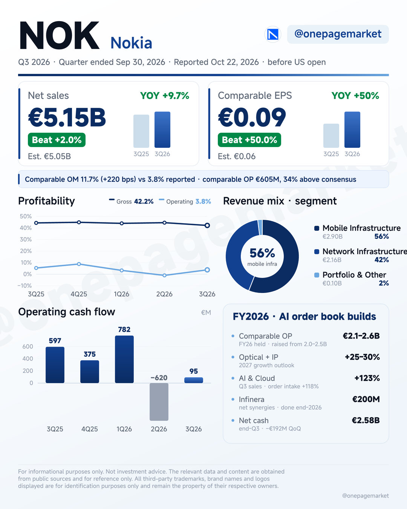
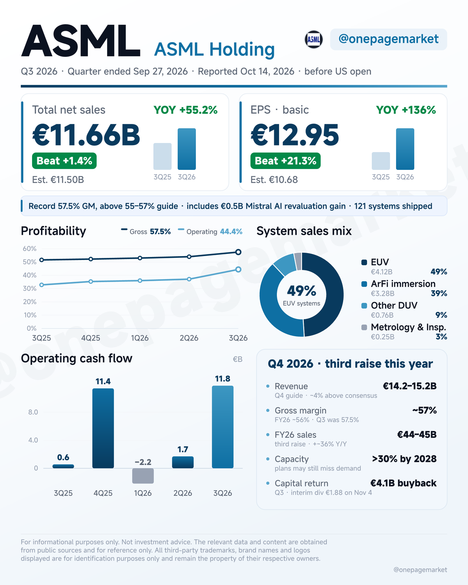
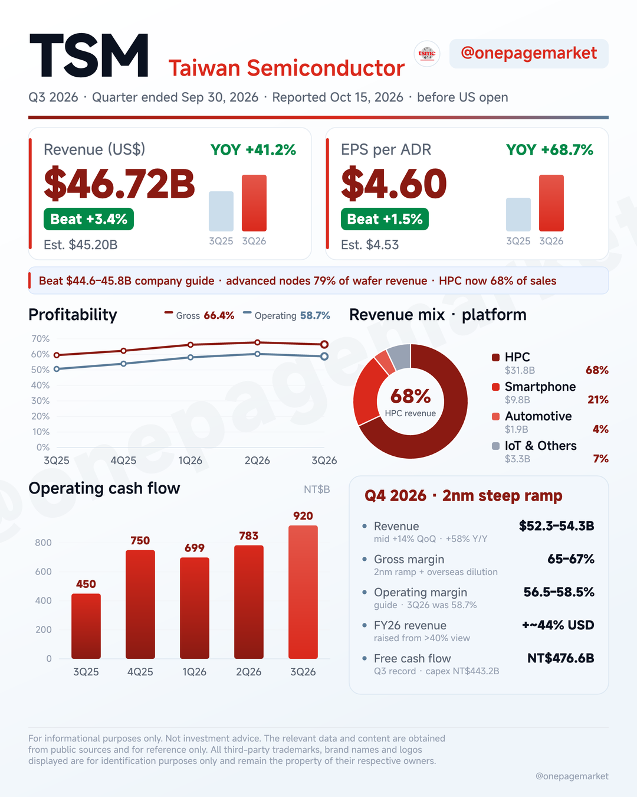
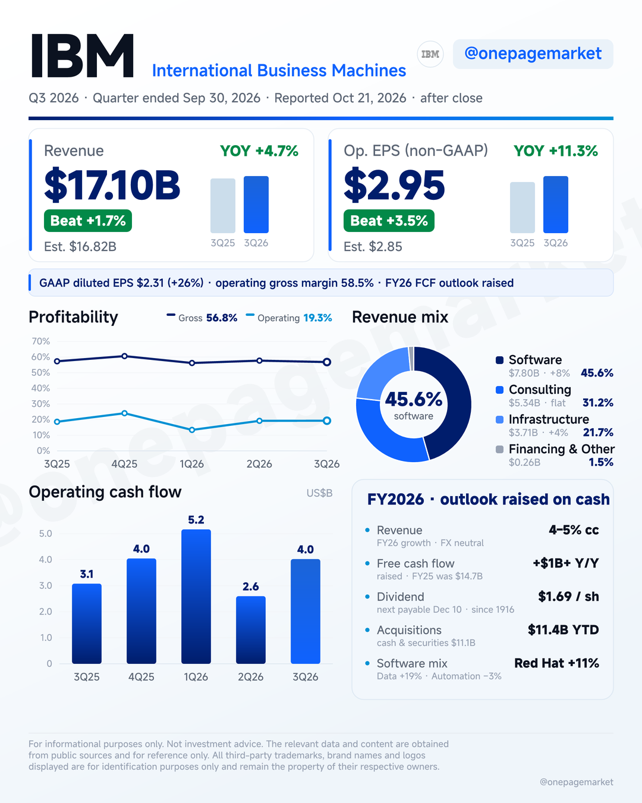
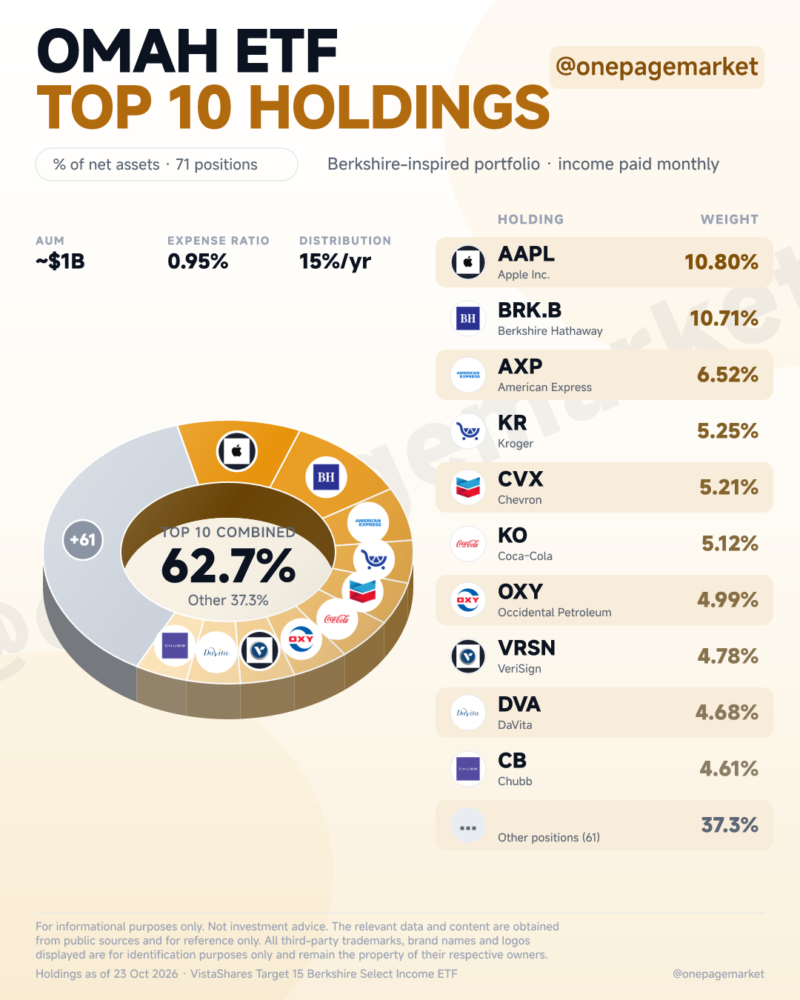
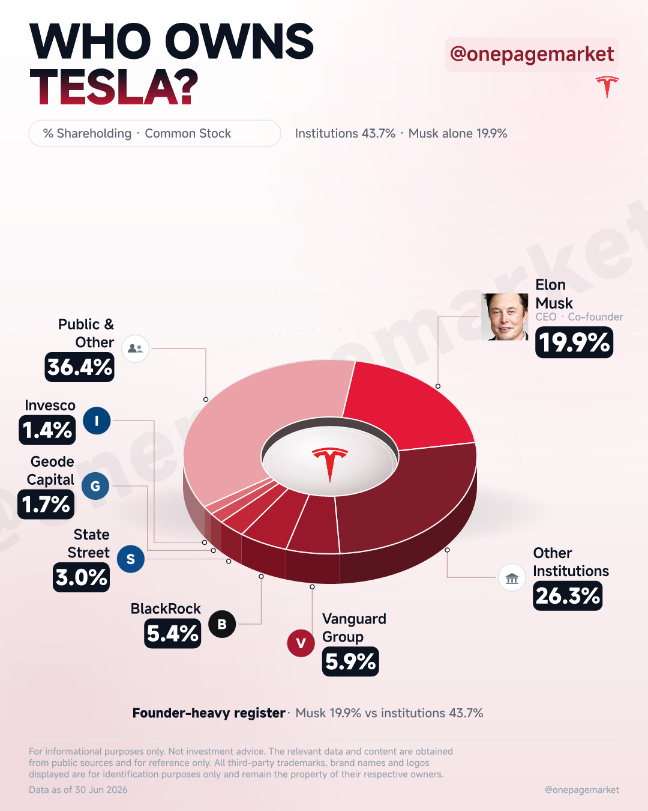
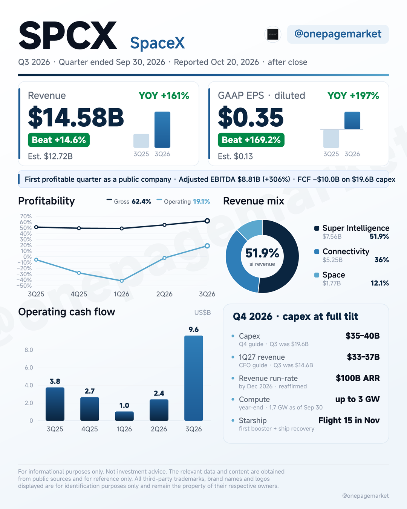

Nokia Q3 2026: net sales €5.15B, up 10% reported (9% constant currency) and 2% above the €5.05B consensus. Comparable EPS €0.09 versus €0.06 expected, as comparable operating profit of €605M came in 34% above consensus and comparable operating margin expanded 220bps to 11.7% — reported margin was 3.8% on accelerated restructuring and Infinera integration. Network Infrastructure grew 15% (IP Networks +43%, Optical +18%) and AI & Cloud sales more than doubled, +123%, with €1.5B of new orders. FY26 comparable operating profit guidance held at €2.1–2.6B, with Optical + IP guided to grow 25–30% in 2027. 🧵
607 字
ASML Q3 2026: record total net sales of €11.66B, up 55% Y/Y and towards the high end of the €11.0–12.0B guide. Basic EPS €12.95 versus €10.68 expected — net income of €4.96B includes a €0.5B Mistral AI revaluation gain. Gross margin hit a record 57.5%, above the 55–57% guide, as Installed Base Management sales beat at €3.3B; EUV was 49% of €8.4B system sales and 121 systems shipped. Q4 guide: €14.2–15.2B with ~57% GM — FY26 raised a third time to €44–45B (+~36% Y/Y), and ASML says 2027–28 supply may still fall short of demand, with customers asking for 2029–2030 slots. 🧵
577 字
TSMC Q3 2026: revenue $46.72B in USD terms, up 41.2% Y/Y and above the $44.6–45.8B company guide. EPS per ADR $4.60 (NT$29.43), up 68.7% Y/Y. Gross margin 66.4% (within the 65–67% guide), operating margin 58.7% (above the 56–58% guide) — 2nm dilution absorbed, and 2nm already ships 8% of wafer revenue with advanced nodes at 79%. HPC is now 68% of sales. Q4 guide: $52.3–54.3B revenue (+58% Y/Y at the midpoint), GM 65–67%, OM 56.5–58.5% — and FY26 USD revenue growth raised to ~44%. 🧵
486 字
IBM Q3 2026: revenue $17.10B, up 4.7% Y/Y and 1.7% ahead of the $16.82B consensus. Operating EPS $2.95 versus $2.85 expected; GAAP diluted EPS $2.31, up 26% on a much lower tax rate. Gross margin 56.8% GAAP (−50 bps); operating pre-tax margin 19.3%, up 70 bps. Software led at $7.80B (+8%, Red Hat +11%, Data +19%), Consulting flat at $5.33B, Infrastructure +4% as Distributed rose 31% ahead of the z17 cycle. Free cash flow $3.0B, up 28% Y/Y — and the FY26 outlook was raised: FCF now expected to grow by more than $1B Y/Y. 🧵
526 字
OMAH ETF owns Berkshire's picks and wraps them in an options overlay targeting 15%/yr, paid monthly. Top 10 = 62.7% of the fund: AAPL 10.8%, BRK.B 10.7%, AXP 6.5%. Full list inside. 🧵
183 字
Who owns Tesla? Elon Musk holds 19.9% per his June 13G — the largest individual stake. Institutions hold 43.7%: Vanguard 5.9%, BlackRock 5.4%, State Street 3.0%. Nearly 40% sits with retail and other holders. 🧵
210 字
SpaceX Q3 2026: revenue $14.58B, up 161% Y/Y and 14.6% ahead of the $12.72B consensus. GAAP diluted EPS $0.35 versus $0.13 expected — the first profitable quarter since the June IPO, with net income of $4.40B. Super Intelligence became the largest segment: $7.56B, +830% Y/Y, 52% of revenue. Starlink connectivity added $5.25B (+69%), Space launches $1.77B (+6%). Gross margin 62.4%, operating margin 19.1%, adjusted EBITDA $8.81B. The catch: free cash flow was −$10.0B on $19.6B of capex — Q4 capex is guided to $35–40B and 1Q27 revenue to $33–37B. 🧵
551 字